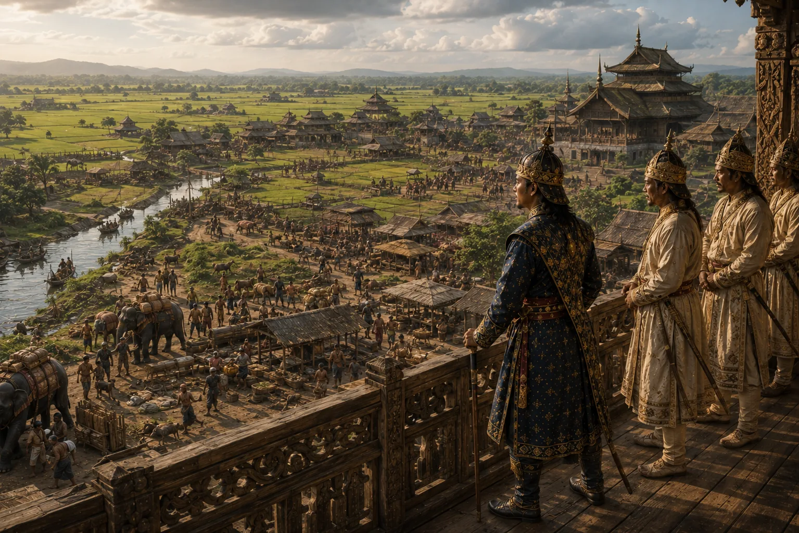

The Long Peace and Cultural Growth Under Khora Raja
1565–1603 · Swarganarayan’s kingdom

Following early wars, Sukhaamphaa's kingdom experiences prolonged domestic peace, flourishing commerce, and arts.
Sources have not yet been catalogued for this record.
People: Sukhaamphaa (Khora Roja)
Open this scene in the interactive archive · Follow this event on MAP